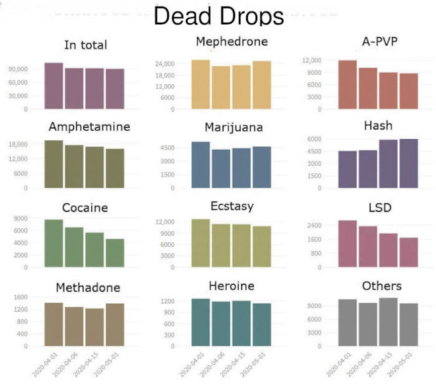
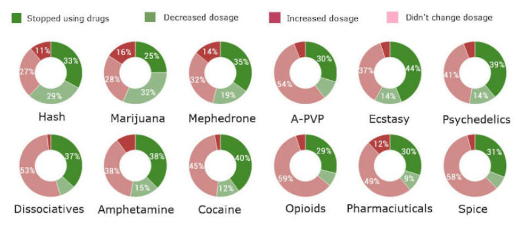
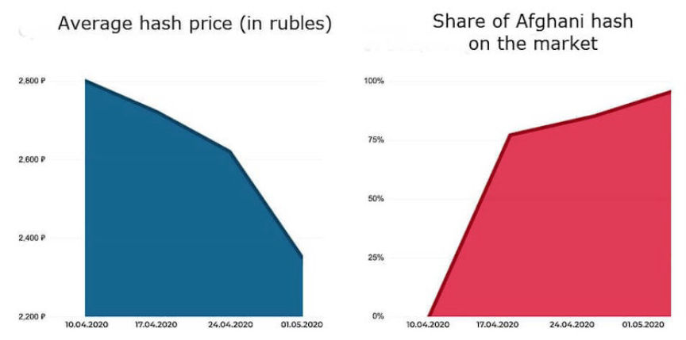
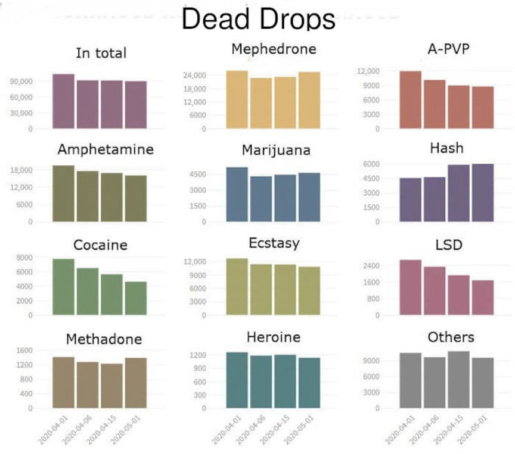
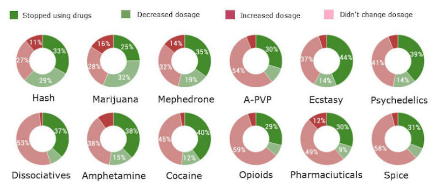
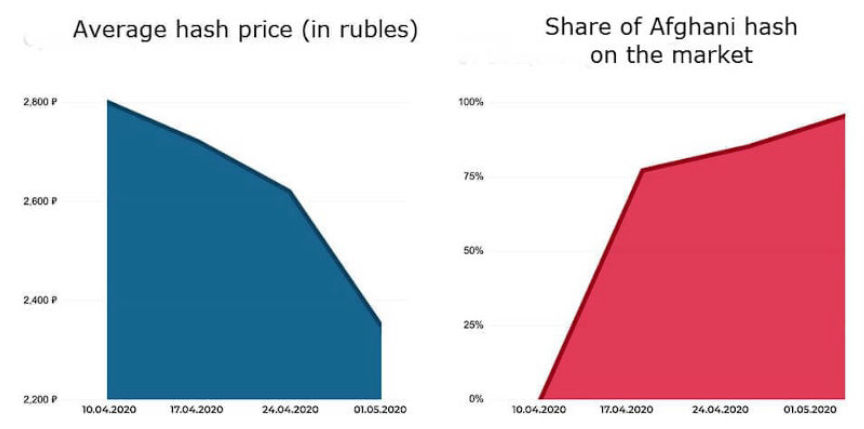

COVID-19: Sales on Hydra Dropped 25% in April
~3 min read | Published on 2020-06-23, tagged Darkweb-Market, General-News using 515 words.
Sales on the Hydra darkweb marketplace decreased by 25% during the month of April, according to recent research on the impact of COVID-19 on the darkweb drug trade in Russia. The reason for the decline in drug use and purchases, according to some users, is ongoing lockdown measures in many regions.
According to research by anonymous data-analyst Drugstat and a freelance journalist Andrey Kaganskikh, total drug sales on Hydra decreased by 25% in April 2020. The number of dead drops reduced by 13% during the same month.The Decline of LSD, Cocaine, and Marijuana Sales
In March, Hydra users placed 995,580 orders on Hydra. In April, users only placed 747,226 orders. LSD sales declined at record pace – 45% (from 11,586 to 6,364). Marijuana demand fell 40% (from 132,418 to 76,824). Cocaine was bought 34% less often (from 40,354 to 26,600). However, the hash trade remained relatively stable and lost only 7% in volume (from 90,914 to 84,814).

Mephedrone was sold 189,762 times in April and remained the most popular drug in Russia. A-PVP took second place with 91,948 orders. Hash accounted for 84,814 purchases and finished third. LSD, the least favored drug, was purchased only 6,364 times. Heroin surpassed acid by only 226 sales and was ranked second to last.Russians Decreased Overall Drug Consumption
DrugStat surveyed 2,361 drug users from Russia and learned:
34% – stopped taking narcotics; 15% – reduced drug intake; 8% – increased dosage; 43% – used as frequently as before the COVID-19 pandemic.

The main reasons drug users stopped or cut down on drug use include:
lockdown measures; fall in drug supply; health concerns; financial stress; police control strengthening. Drug Prices are Increasing
The mean price of narcotics rose 7% in April. A-PVP ranked first in terms of cost growth rate (22%), hash (at second) is now 16% more expensive, and marijuana (now third) increased by 14%. MDMA, cocaine, and LSD costs rose less than 1% and remained stable.
Cocaine maintained the status of the most expensive drug with an average price of $136 per gram. Methadone was sold for $74 per gram. MDMA is still $36 per gram. Amphetamine is $19 per gram. A-PVP is $32 per gram. Mephedrone is $27 gram.
LSD secured the position of the most costly psychedelic in Russia amid the coronavirus-concerns ($16 per blotter).

Hash supplies from Morocco to Russia were severely disrupted in March. As a result, the number of stashes with hash buried in Primorsky Krai (Russian Far East) decreased to two a day in April. But on May 1, this number sky-rocketed to 65 as smugglers managed to import a large batch of cannabis concentrate from Afghanistan. In three weeks, the mean price of hash dropped by 16%: from $41 to $34.
On April 15, Hydra’s storefronts received a “rent freeze” until the end of the coronavirus-related panic. However, vendors have had to increase drug prices due to shortages and restrictions on traffic. Many carriers refused to deliver drugs in bulk because of the transportation restrictions implemented in many regions.
Additional findings are available here: pandemic-research.github.io
According to research by anonymous data-analyst Drugstat and a freelance journalist Andrey Kaganskikh, total drug sales on Hydra decreased by 25% in April 2020. The number of dead drops reduced by 13% during the same month.The Decline of LSD, Cocaine, and Marijuana Sales
In March, Hydra users placed 995,580 orders on Hydra. In April, users only placed 747,226 orders. LSD sales declined at record pace – 45% (from 11,586 to 6,364). Marijuana demand fell 40% (from 132,418 to 76,824). Cocaine was bought 34% less often (from 40,354 to 26,600). However, the hash trade remained relatively stable and lost only 7% in volume (from 90,914 to 84,814).

The decentralized production of mephedrone helped keep the mephedrone supply stable
Mephedrone was sold 189,762 times in April and remained the most popular drug in Russia. A-PVP took second place with 91,948 orders. Hash accounted for 84,814 purchases and finished third. LSD, the least favored drug, was purchased only 6,364 times. Heroin surpassed acid by only 226 sales and was ranked second to last.Russians Decreased Overall Drug Consumption
DrugStat surveyed 2,361 drug users from Russia and learned:

Respondents smoked less marijuana in April. Alpha-PVP and opiates have not been used less
The main reasons drug users stopped or cut down on drug use include:
The mean price of narcotics rose 7% in April. A-PVP ranked first in terms of cost growth rate (22%), hash (at second) is now 16% more expensive, and marijuana (now third) increased by 14%. MDMA, cocaine, and LSD costs rose less than 1% and remained stable.
LSD secured the position of the most costly psychedelic in Russia amid the coronavirus-concerns ($16 per blotter).

The fall and rise of hashish prices
Hash supplies from Morocco to Russia were severely disrupted in March. As a result, the number of stashes with hash buried in Primorsky Krai (Russian Far East) decreased to two a day in April. But on May 1, this number sky-rocketed to 65 as smugglers managed to import a large batch of cannabis concentrate from Afghanistan. In three weeks, the mean price of hash dropped by 16%: from $41 to $34.
On April 15, Hydra’s storefronts received a “rent freeze” until the end of the coronavirus-related panic. However, vendors have had to increase drug prices due to shortages and restrictions on traffic. Many carriers refused to deliver drugs in bulk because of the transportation restrictions implemented in many regions.
Additional findings are available here: pandemic-research.github.io